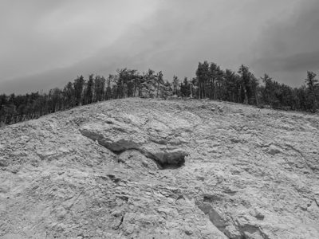
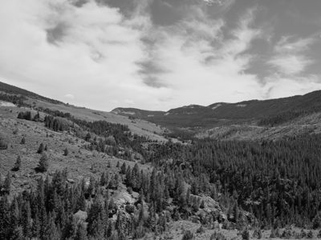
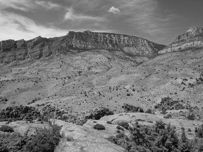
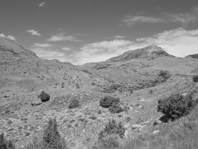
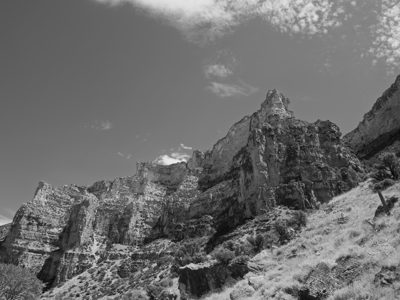
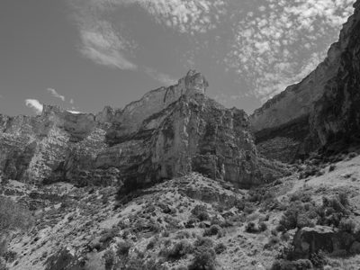
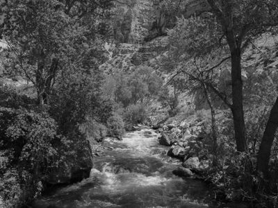

Public Lands Institute
Map
Archive
About
Black Hills National Forest
SD

Black Hills National Forest 1 · 2026-06-09
_DSF2909.jpg

Black Hills National Forest 2 · 2026-06-09
_DSF2917.jpg

Black Hills National Forest 3 · 2026-06-09
_DSF2922.jpg

Black Hills National Forest 4 · 2026-06-09
_DSF2924.jpg

Black Hills National Forest 5 · 2026-06-09
_DSF2927.jpg

Black Hills National Forest 6 · 2026-06-09
_DSF2929.jpg

Black Hills National Forest 7 · 2026-06-09
_DSF2931.jpg
Black Hills National Forest 8 · 2026-06-09
_DSF2940.jpg
← Mount Rushmore National Memorial
Badlands National Park →